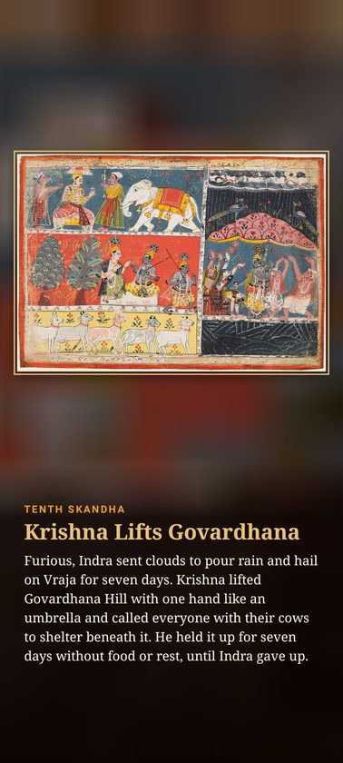
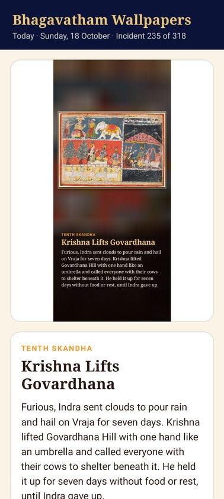
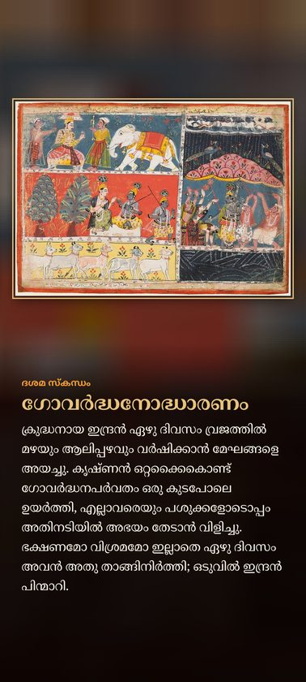

Bhagavatham Wallpapers is an Android app that changes your phone wallpaper every day to the next incident of the Srimad Bhagavatam. Each wallpaper shows a classical painting together with a short story of that day's incident.



How it works
- One incident a day. 318 incidents in order through all twelve skandhas, from the sages of Naimisharanya and King Parikshit to Krishna's life in Vrindavana and Dwaraka and Markandeya's vision. Day one is the day you install it.
- Painting and story. The wallpaper shows the painting in a gold frame with the skandha, title and a short story underneath. You can hide the story text.
- Home, lock or both. Choose where the wallpaper goes. It changes on its own after midnight and keeps working after a restart.
- Swipe to read. Swipe left or right in the app to read ahead or look back, and set any incident as your wallpaper.
- Six languages. English, Malayalam, Tamil, Telugu, Kannada and Hindi. The app follows your phone's language, or you can pick one.
- Works offline. The paintings come with the app. No account, no ads.
The paintings
The paintings come from Wikimedia Commons: Bhagavata Purana folios from the Pahari, Kangra, Guler and Rajasthani schools, Mughal-era paintings, works by Raja Ravi Varma and other public-domain or freely licensed art. Each one is credited in the app with a link to its source page and licence.
The series
Bhagavatham is the second app in the series, after Ramayanam Wallpapers. Mahabharatham is planned next.
Contact
Questions or corrections to a story or translation: info@calecutech.com